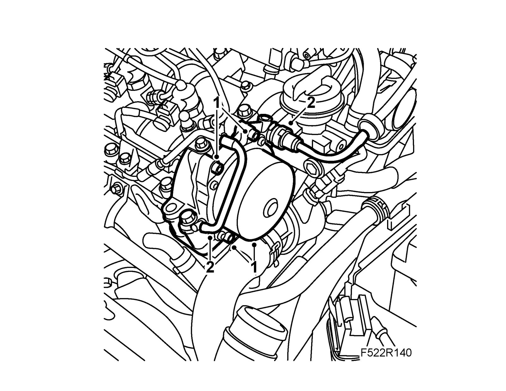

Vacuum Pump, Z19
Vacuum pump, Z19To remove
1. Remove the upper engine cover and insulation.
2. Disconnect the hoses.
3. Remove the vacuum pump.
To fit
1. Clean the sealing surfaces and fit the vacuum pump using new seals.
Tightening torque: 9 Nm (7 lbf ft)

2. Fit the hoses.
3. Fit the insulation and upper engine cover.